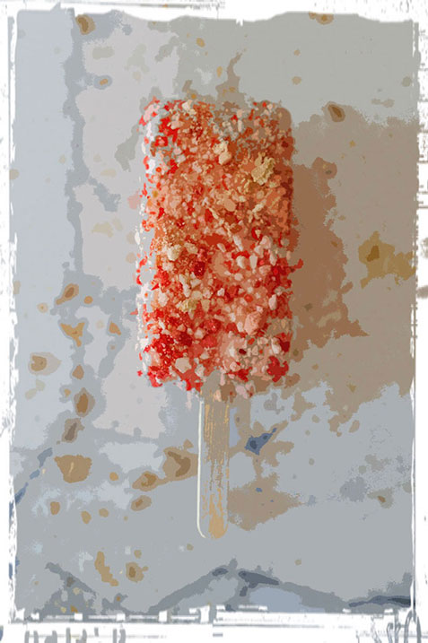
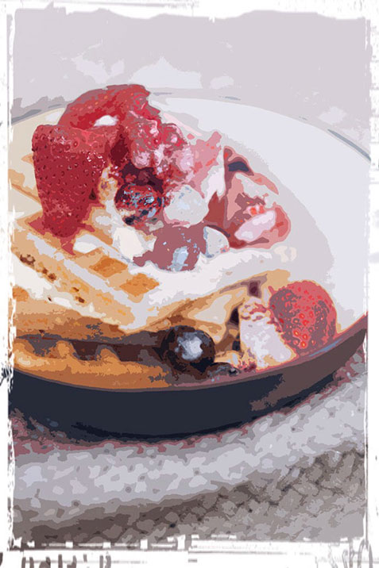

Opskrifter
Find her en opskrift til enhver lejlighed...

Ingredienser:
Jordbærstang med frugtstykker
Ingredienser:
-1 stk Jordbærstang is
-1 håndfuld frugtstykker
Kunne du tænke dig at gøre din
jordbæris endnu lækrere?
Sådan gør du:
1. Lad isen blive lidt blød og vend
den i jordbær- og bananstykker.
2. Læg den tilbage i fryseren i 5min.
3.Nyd den bagefter!

Ingredienser:
Vaniljeis med varme vafler
Ingredienser:
-200 g frosne eller friske jordbær
-1 l vanilje eller stracciatella is
- 300 g sigtet speltmel
- 4 æg
- 250 ml havredrik
- 1 tsk. fintreven økologisk citronskal
Sådan gør du:
1. Optø jordbærrene.
2. Rør mel, æggene, havredrik og
citron sammen til en jævn blanding.
3. Bag ca. 15 vafler og hold dem varme.
4. Server vaflerne med is og jordbær.
Kontakt Isbilen i Danmark
Hjem-IS Danmark A/S
Kokholm 1B/1.
6000 Kolding
Danmark
Kokholm 1B/1.
6000 Kolding
Danmark
Tlf. 7610 6100
Man-Tor: 8:00-15:30
Fre: 8:00-14:00
info@hjem-is.dk
Man-Tor: 8:00-15:30
Fre: 8:00-14:00
info@hjem-is.dk